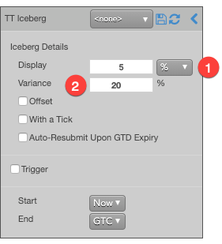
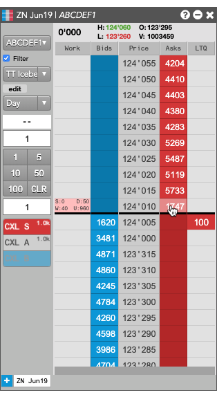
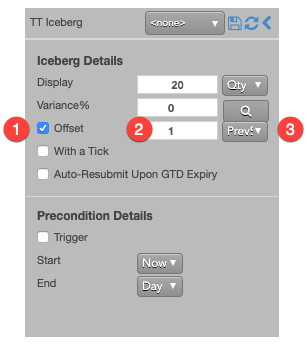
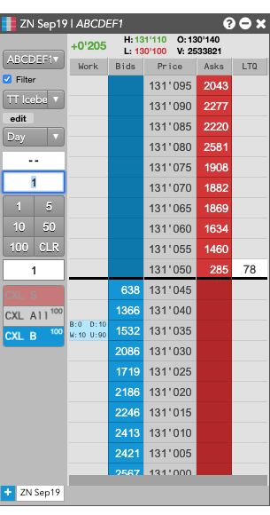
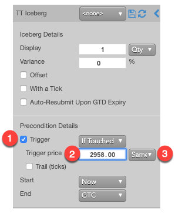
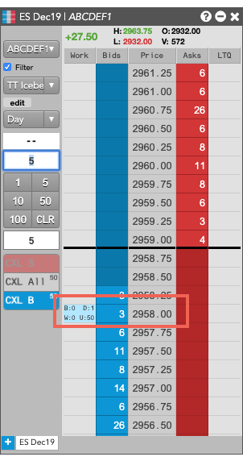
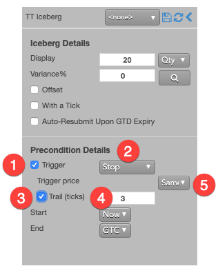
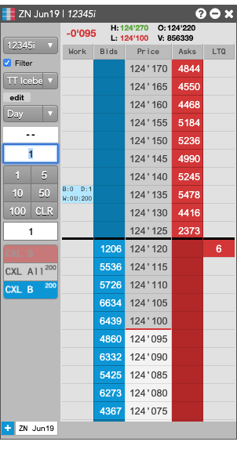

A TT Iceberg order executes a large volume order by breaking it into smaller disclosed orders, publicly displaying only the specified portion instead of the full order quantity. When one disclosed portion fills, the next portion is sent to the market. This process continues until the order is filled.
Behaviors
The following examples illustrate how you can configure a TT Iceberg order with different behaviors for the child and parent orders. Also, each example shows how the order will appear in MD Trader.
-
Determining the disclosed quantities of the child orders
-
Using a static value for the disclosed quantity child orders
-
Varying the quantities of the disclosed quantity child orders
-
Specifying the price at when child orders are entered
-
Send all orders at the same price
-
Set the price for each order based on market conditions
-
Aggressing the price of a working child order based on market conditions (WAT)
-
Setting preconditions for the parent order
-
Triggering a TT Iceberg parent order at a specific price level
-
Triggering a TT Iceberg parent order at a price level that trails the market
-
Starting and stopping a TT Iceberg parent order
=====================
-
Customizing the TT Iceberg child orders
-
Customizing the TT Iceberg parent order
Scenarios for managing child orders
Child-order parameters let you customize how a TT Iceberg order enters and manages its child orders. You can customize the how the order quantities are determined, the price levels at which to enter the child orders as well as other behaviors.
Submitting a basic TT Iceberg order
A basic Iceberg order slices a large-quantity order into smaller-sized orders of a fixed quantity, all at the same price.
Note: This basic TT Iceberg order mimics a typical exchange-native Iceberg order type. If the exchange natively supports an Iceberg order type, you would normally use it instead of a TT Iceberg.
Suppose you want to create an Iceberg order for 100 contracts that submits 20-lot child orders at the same price level as the parent Iceberg order. In this case, you would specify the following TT Iceberg order parameters.

-
From MD Trader or an Order Ticket, set the order quantity to 100.
-
Select TT Iceberg from the order type dropdown.
-
Set the Display to 20 and select Qty from the Display dropdown to set the child order quantity to 20 contracts.
-
Submit the order at the desired side and price.
If you submitted a Buy order at 123'185, the TT Iceberg parent order would resemble the following:

After the each order is fully filled, the TT Iceberg will submit the next order at 123'185 until the total order quantity has been filled.
Submitting child orders with varying quantities
Instead of submitting a fixed quantity of 20 for every child you can vary the quantity of the child orders based on a percentage of the total TT Iceberg order quantity. You can also use a variance to increase or reduce the quantity of each child order by a percentage of the disclosed quantity.
Suppose you want create a TT Iceberg order that submits child orders for 5% of the total order quantity with a 20% variance. In this case, you would specify the following TT Iceberg order parameters in the flyout. For a 1000 -ot order:
-
Set the Display to 5 and select % from the Display dropdown to set the disclosed quantity to 5% of the total quantity of the TT Iceberg parent order. This quantity becomes the base quantity for calculating variance. For the 1000-lot order, the base child order quantity would be 50.
-
Set the Variance to 20 %. With this setting, each child order could have an order quantity between 40 and 60 (+/- 20% of 50).

If you submitted a Sell order for 1000 contracts at 124'00, the TT Iceberg parent order would resemble the following:

After the each order is fully filled, the TT Iceberg will submit the next order at 124'010 until the total order quantity has been filled.
Submitting child orders using price offsets
TT Iceberg orders also let you dynamically set the price of each child order based on different market prices or the price of the previous order. You can configure the TT Iceberg to determine the order price for its child orders based on number of ticks away from the:
-
LTP, Ask or Bid price of the market at the time the child order is submitted.
-
Price of the last child order (DRO).
For example, suppose you want to submit successive child orders priced at one tick away from the price of the previous order. In this case, you would enter the following parameters in the flyout:
-
Enable the Offset parameter.
-
Enter 1 for the number of ticks away.
-
Select DRO from the Offset dropdown to calculate the price of the new child order based on the price of the previous child order.

If you clicked somewhere on the Buy side, the TT Iceberg parent order would resemble the following.

Note: When the first child order is filled at XXXX, the next child order will be placed two ticks away at YYYY.
Scenarios for starting parent orders
The trigger and timing parameters let you determine when to start working the TT Iceberg parent order and when the parent order should begin entering its child orders into the market.
Triggering a TT Iceberg parent order at a specific price level
Instead of entering an TT Iceberg order that begins working as soon as you submit, you can set a price trigger that will hold the parent order until a particular price level is reached. When the market reaches that price level, the parent TT Iceberg order changes to Working state and submits its first child order.
In addtition to managing its child orders, a TT Iceberg also lets you manage when the parent order will start entering its child orders. One of the common ways is to set a trigger price, which puts the TT Iceberg parent order on hold until a trade occurs at a specific price level. When the market reaches that price level, the parent TT Iceberg order changes to Working state and submits its first child order. The TT Iceberg order type supports the following types of triggers:
-
If-Touched: Triggers when a trade occurs at the specified price level or better
-
Stop: Triggers when a trade occurs at the specified price level or worse.
After selecting the type of trigger to use, you need to set a trigger price and trigger price type. The following trigger price types are supported:
-
LTP: Any trade occurs at the specified price level.
-
Bid/Ask: A trade on the selected side occurs at the specified price level.
-
Same/Opposite Side: A trade occurs at the specified level on the same side of the market as the parent TT Iceberg order.
Suppose you want to enhance your TT Iceberg order so that it that begins working a when the market for the ZB Jun19 contract trades at 149'22 on the same side as your Buy or Sell order. In this case, you would add a same-side If-Touched trigger as follows:
-
Enable Trigger set a trigger for the order.
-
Select If Touched from the dropdown to trigger the TT Iceberg order when a trade occurs at the specified price.
-
For the Trigger price, enter 123'215 for the price at which to trigger the order.
-
Select Same Side from the drop-down to indicate the trade must occur at the inside market for the same side as the TT Iceberg order. So if you enter the order as a Bid, the order will be triggered if a Buy order executes at 123'215.

If you clicked somewhere on the Buy side, the TT Iceberg parent order would resemble the following.

As you can see, the working quantity of the order you entered is still 0 and will remain so until the order is triggered.
Triggering a TT Iceberg parent order at a price level that trails the market
Instead of entering your TT Iceberg order at a specific-price level, suppose you want to trigger the parent order only if the market reaches a price level a number of ticks away from the state of market when you enter the order. A trailing trigger sets the maximum number of ticks away from the trigger price type that an order can be triggered and automatically adjusts with market movement based on the type of trailing trigger.
Adding a trailing component to a trigger causes the trigger to behave as follows:
-
Trailing If-Touched Buy Trigger: Sets the trigger a specified number of ticks below the trigger price type. When the market moves higher, the trigger follows the market and maintains its ticks away value; when the market moves lower, the trigger's price does not move.
-
Trailing If-Touched Sell Trigger: Sets the trigger a specified number of ticks above the trigger price type. When the market moves lower, the trigger follows the market and maintains its ticks away value; when the market moves higher, the trigger's price does not move.
-
Trailing Stop Buy Trigger: Sets the trigger a specified number of ticks above the trigger price type. When the market moves lower, the trigger follows the market and maintains its ticks away value; when the market moves higher, the trigger's price does not move.
-
Trailing Stop Sell Trigger: Sets the trigger a specified number of ticks below the trigger price type. When the market moves higher, the trigger follows the market and maintains its ticks away value; when the market moves lower, the trigger's price does not move.
For example, suppose you want to enter the TT Iceberg parent order with a trailing Stop trigger set at three ticks away from the last-traded price. In this case, you would configure the TT Iceberg settings as follows:
-
Enable Trigger set a trigger for the order.
-
Select Stop from the dropdown to set a Stop trigger the TT Iceberg order.
-
Enable the Trail (ticks) parameter to use a relative price rather than a specific price for the trigger.
-
Enter 3 to set the number ticks away to trail the trigger price.
-
From the the Trigger price drop-down, select LTP to trail the last-traded price.

If you clicked somewhere on the Buy side, the TT Iceberg parent order would resemble the following.

As you can see, the working quantity of the order you entered is still 0 and will remain so until the order is triggered.
TT Iceberg order parameters
Iceberg details parameters
The following parameters determine how the TT Iceberg manages its child orders.
- {% include Parameters/DisplayedQuantity_Details.html%}
- {% include Parameters/Variance_Details.html%}
- {% include Parameters/OffsetTicks_Details_Iceberg.html %}
- {% include Parameters/WithATick.html %}
- {% include Parameters/AutoResubmit_Details.html %}
Trigger parameters
The following trigger parameters specify the market conditions under which the TT Iceberg parent order will begin entering its child orders.
- {% include Parameters/TriggerType_Details.html%}
- {% include Parameters/TriggerPrice_Details.html%}
- {% include Parameters/TrailOffset.html%}
Timing parameters
The following timing parameters let you specify a timeframe for the TT Iceberg parent order to be active and how to handle its working child orders when the timeframe ends.
- {% include Parameters/TimeDate.html %}
- {% include Parameters/StartTime_Details.html %}
- {% include Parameters/EndTime_Details.html %}
- {% include Parameters/EndTimeAction_Details.html %}
- {% include Parameters/DisplayedQuantity_Details.html%}
- {% include Parameters/Variance_Details.html%}
- {% include Parameters/OffsetTicks_Details_Iceberg.html %}
- {% include Parameters/WithATick.html %}
- {% include Parameters/AutoResubmit_Details.html %}
- {% include Parameters/TriggerType_Details.html%}
- {% include Parameters/TriggerPrice_Details.html%}
- {% include Parameters/TrailOffset.html%}
- {% include Parameters/StartTime_Details.html %}
- {% include Parameters/EndTime_Details.html %}
- {% include Parameters/EndTimeAction_Details.html %}